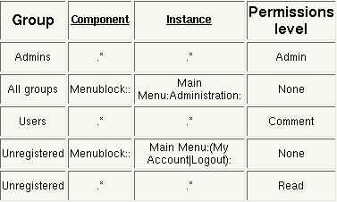
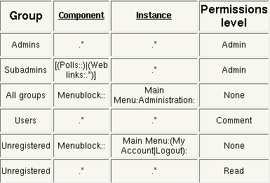
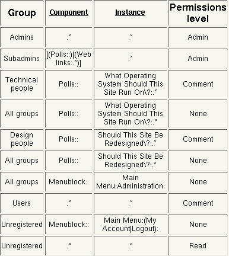
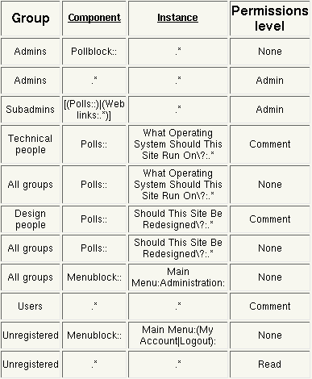

Permissions
Introduction
The PostNuke permissions system allows complete control over which content on
the site is available to different users, and what they can do with it. It
also allows the site to have multiple administrators, each responsible for
their own area, and further subdivides all content into separate realms to
allow for multiple sets of content on the same site but viewable by different
users.
This help file covers the administration of the permissions system.
Warning: Incorrect permissions could allow any user administrative access to
your site. Please ensure that you have read and understood this document
before attempting to set up your own permissions system.
Permission Attributes
Each permission is compsed of a number of attributes. These attributes are
explained in detail below.
Realm
A realm is an area of control for content. Most users will not need this,
as they will only have a single realm. More information on realms can be found
in the realm manual.
User/Group
This is the user or group that the permission applies to. More information on
groups can be found in the groups manual.
Component
This is the component that you wish the permission to work against. The
component takes the form of a triplet separated by the colon (:) symbol. There
are three types of component
- System - System components take the form of
"system:area:instance" where area and
instance are currently reserved.
- Block - Block components take the form of
"type:instance:action" where type is the block
type ('Type' column on the blocks administration page) with 'block' appended
to it, and instance and action are currently reserved.
- Module - Module components take the form of
"name:instance:area" where type is the name of
the module (e.g. "Web Links", "Downloads"), instance is currently
reserved, and area is the are of the module affected.
The component value is an anchored regular expression. To see a list of currently
registered componenets you can click on the 'Component' or 'Instance'
headings on the permissions view page.
Warning: Incorrect component values could allow any user administrative
access to your site. Please ensure that you are familiar with regular
expressions before attempting to set up your own permissions system.
Instance
This is the instance of the component that you wish to permission to work
against. The instance takes the form of a triplet separated by the colon (:)
symbol. The instance values are component-dependent; a list of instance
templates for all currently installed modules and blocks is available by
clicking on the 'Instance' heading on the table.
The instance value is an anchored regular expression.
Level
This is the level of authorisation provided. It can be one of the following:
- None - no access
- Overview - allowed an overview of the content
- Read - allowed to read the content
- Comment - allowed to comment on the content
- Moderate - allowed to moderate the content
- Edit - allowed to edit the content
- Add - allowed to add content
- Delete - allowed to delete content
- Admin - full access
Ensure that the correct level is chosen to allow only as many permissions as
are required.
Ordering
Ordering of permissions is very important. When checking for permissions the
authorisation system will return the first matching permission that it finds, and this must be taken in to account when setting up a permissions sequence.
User and Group Permissions
User permissions are considered to explicitly override group permissions. If a
group and a user permission are both found for an authorisation attempt, the
permissions system will return the user permission.
Examples
The following are a number of examples showing the security system, with
explanations. All of the examples use group permissions rather than user
permissions; they allow easier configuration for larger sites with multiple
users. User permissions follow the same method, but are explicit
Initial Setup

This picture shows the initial permission settings that come with a new
PostNuke install. A detailed explanation of each of the items follows:
- Allow those in group 'Admins' to access everything at permission level
'Admin'.
- Group 'Admins'. This group should have all site administrators
in it
- Component '.*'. This matches any component
- Instance '.*'. This matches any instance
- Level 'Admin'. This allows the highest level of access
- Stop non-administrators from viewing the Administration entry in the
main menu.
- Group 'All groups'. This is a special group that includes every
user on the site that is a member of a group, and also the unregistered
(anonymous) user. Note that this group cannot have users added to it; it
automatially picks up all users in the system when it runs. Note that it
is a very good idea to ensure that all users are in at least one group on
the system
- Component 'Menublock::'. This matches anything with the
component 'Menublock::', which are all of the blocks with type 'Menu'
- Instance 'Main Menu:Administration:'. This will match for a
menu block titled 'Main Menu' and a link titled 'Administration'
- Level 'None'. This means that no access at all will be allowed;
in the case of the menu this just means that the link will not be displayed
- Allow normal users to do anything on the system up to comment
- Group 'Users'. This group should have all site users in it
- Component '.*'. This matches any component
- Instance '.*'. This matches any instance
- Level 'Comment'. This allows access up to the level of
commenting. Any attempts to do things beyond this will be refused.
- Stop unregistered users from seeing user-specific items in the main
menu.
- Group 'Unregistered'. This is a special group that corresponds
only to users who are not logged in to the site.
- Component 'Menublock::'. This matches anything with the
component 'Menublock::', which are all of the blocks with type 'Menu'
- Instance 'Main Menu:(My Account|Logout):'. This will match for
a menu block titled 'Main Menu' and a link titled 'My Account' or 'Logout'
- Level 'None'. This means that no access at all will be allowed;
in the case of the menu this just means that the link will not be displayed
- Allow unregistered users to do anything on the system up to read
- Group 'Unregistered'. This is a special group that corresponds
only to users who are not logged in to the site.
- Component '.*'. This matches any component
- Instance '.*'. This matches any instance
- Level 'Read'. This allows access up to the level of
commenting. Any attempts to do things beyond this will be refused.
Adding a Sub-administrator Group

This picture shows the permission settings after a new sub-administrator group
has been added. The sub-administrator group is only allowed to administrate
the 'Polls' and 'Web Links' areas of the site.
Note that the Web links area actually has two separate sub-sections for
permissions. One is for categories, and the other is for the links themselves.
We want this group to be able to work on both of these sub-sections.
This table only has one new entry. It is explained below.
- Allow subadmins access to polls and web links
- Group 'Subadmins'. This is the group of subadministrators.
Note that groups are created and populated through the groups
administrative interface
- Component '[(Polls::)|(Web lLnks:.*)]'. This is a relatively
complex regular expression, that covers the component 'Polls::' and all
components that start with 'Web Links:'
- Instance '.*'. This matches any instance
- Level 'Admin'. This allows the highest level of access
Per-Group Settings

This picture shows the permission settings after a set of per-group settings
have been added. Two new user groups, 'Technical people' and 'Design people',
have been added and the administrator of the site wants to give them different
polls that better reflect their knowledge.
This table has four new entries. They are explained below.
- Allow those in group 'Technical people' to comment on the poll about
operating systems.
- Group 'Technical people'. This is the group of
people in the system that understand technical issues
- Component 'Polls::'. This matches anything with the component
'Polls::'
- Instance 'What Operating System Should This Site Run On\?::.*'.
This is a very specific instance, and will only match to polls that have
this question as the title. Note that the '?' in the title has to be
escaped, as this is a regular expression.
By looking at the instance schema for the polls it can be seen that an
alternative way to express this would have been '.*:3', where '3' in this
case is the unique ID of this poll. Using IDs is quicker and ensures
uniqueness, but is a lot harder to understand when looking at the
permissions system. The choice to use names or IDs is left to the
individual site administrator It is also possible to use both title and ID
if desired in this case the resultant instance would be 'What Operating
System Should This Site Run On\?::3'
- Level 'Comment'. This allows access up to the level of
commenting. Any attempts to do things beyond this, such as editing or
deleting the poll, will be refused
- Don't allow anyone else to comment on the poll about operating systems.
- Group 'All groups'. This is a special group that includes every
user on the site that is a member of a group, and also the unregistered
(anonymous) user
- Component 'Polls::'. This matches anything with the component
'Polls::'
- Instance 'What Operating System Should This Site Run On\?::'.
The specific instance for this poll, as has been explained above
- Level 'None'. This means that no access at all will be allowed;
in the case of the poll this just means that it will not be displayed
- Allow those in group 'Design people' to comment on the poll about
the site design.
- Group 'Design people'. This is the group of
people in the system that understand design issues
- Component 'Polls::'. This matches anything with the component
'Polls::'
- Instance 'Should This Site Be Redesigned\?::.*'.
This is a very specific instance, and will only match to polls that have
this question as the title. Note that the '?' in the title has to be
escaped, as this is a regular expression.
See above for more information
on specific instances.
- Level 'Comment'. This allows access up to the level of
commenting. Any attempts to do things beyond this, such as editing or
deleting the poll, will be refused
- Don't allow anyone else to comment on the poll about the site design.
- Group 'All groups'. This is a special group that includes every
user on the site that is a member of a group, and also the unregistered
(anonymous) user
- Component 'Polls::'. This matches anything with the component
'Polls::'
- Instance 'Should This Site Be Redesigned\?::.*'.
The specific instance for this poll, as has been explained above
- Level 'None'. This means that no access at all will be allowed;
in the case of the poll this just means that it will not be displayed
Note that any poll which does not explicitly fit the instance information is
treated is ignored by these rules, so with this setup the normal poll will
still show up in addition to the specialised polls.
Admin Overrides

This picture shows how to fix a potential problem that results from the above
changes. When an administrator logs on, he will get beseiged by polls - the
two specialised ones and also the normal poll. Being an administrator, he
probably doesn't even want to vote in them!
The solution to this problem is to block the administrator from seeing the
polls. An obvious first attempt to do this would involve setting up a
permissions entry for the administrators with a component of 'Polls::', an
instance of '.*', an an access level of 'None'. However, this is not
what is required. An entry like this would block administrative ccess to the
polls altogether, so the administrators could no edit current polls, create new
polls, or even access poll results.
What the administrator really wants to do is not to block access to the polls
themselves, but to block access to the polls blocks. This means that
the polls blocks are not displayed, but the polls themselves are still fully
available through the administrative interface.
Other Examples
Future examples will be made available at a later date.